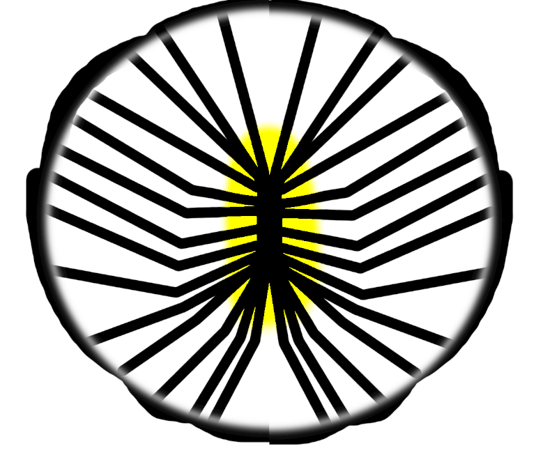
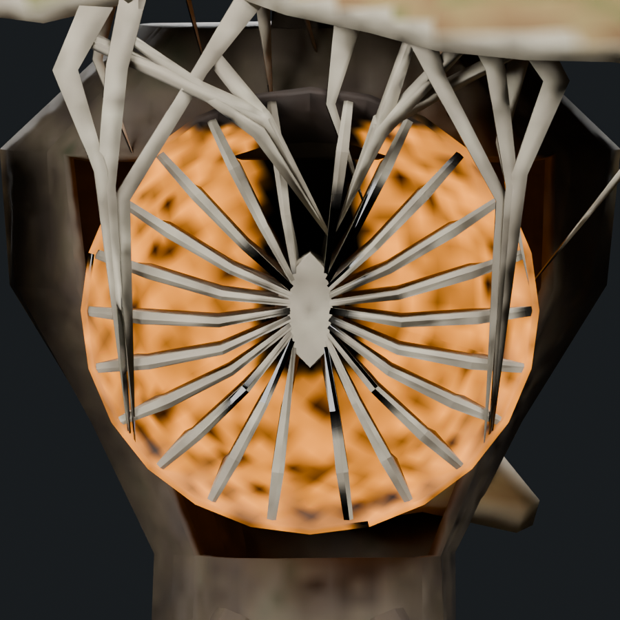
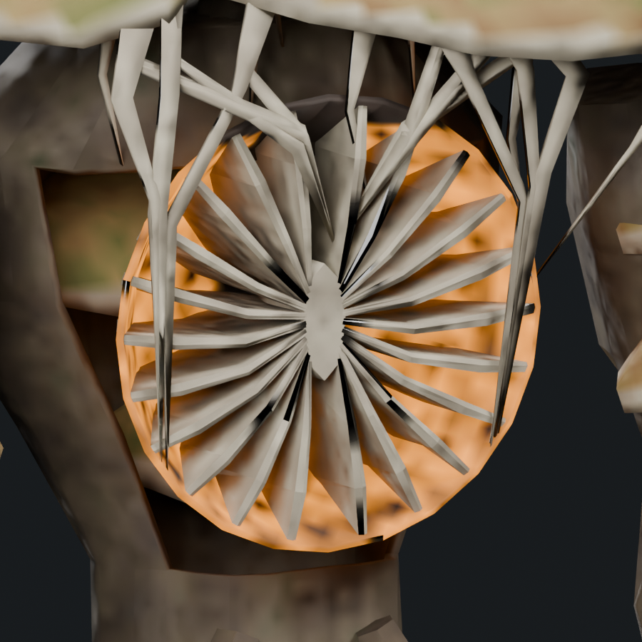
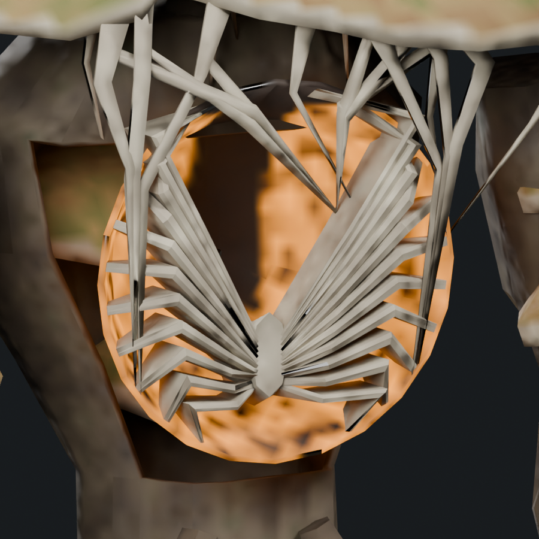
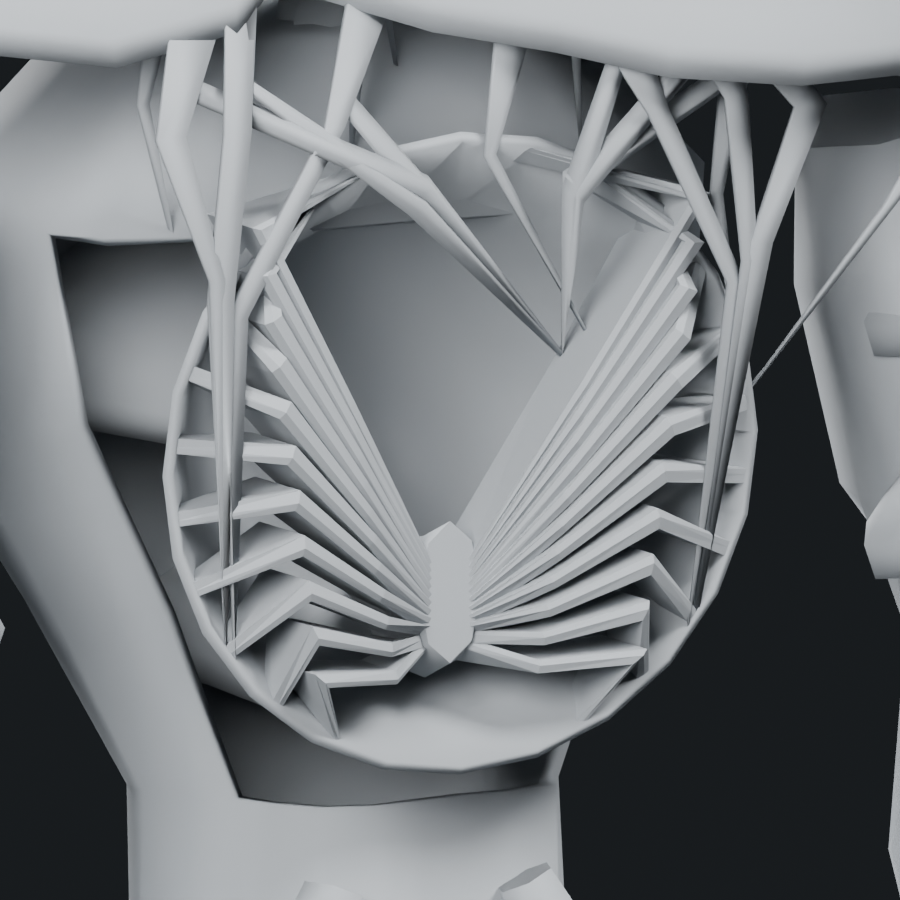
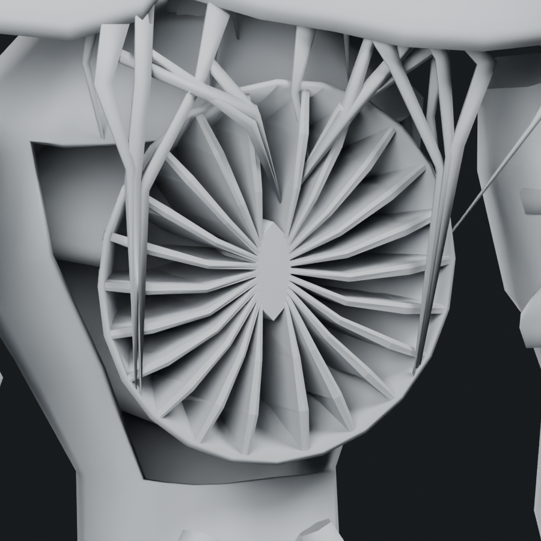
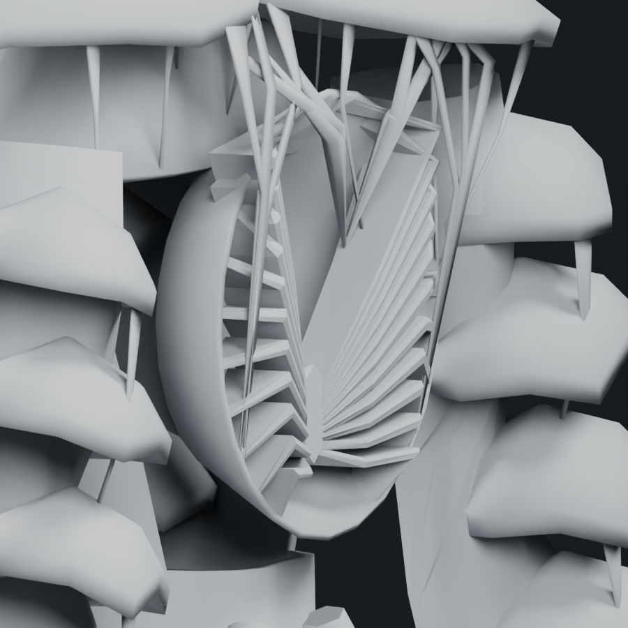
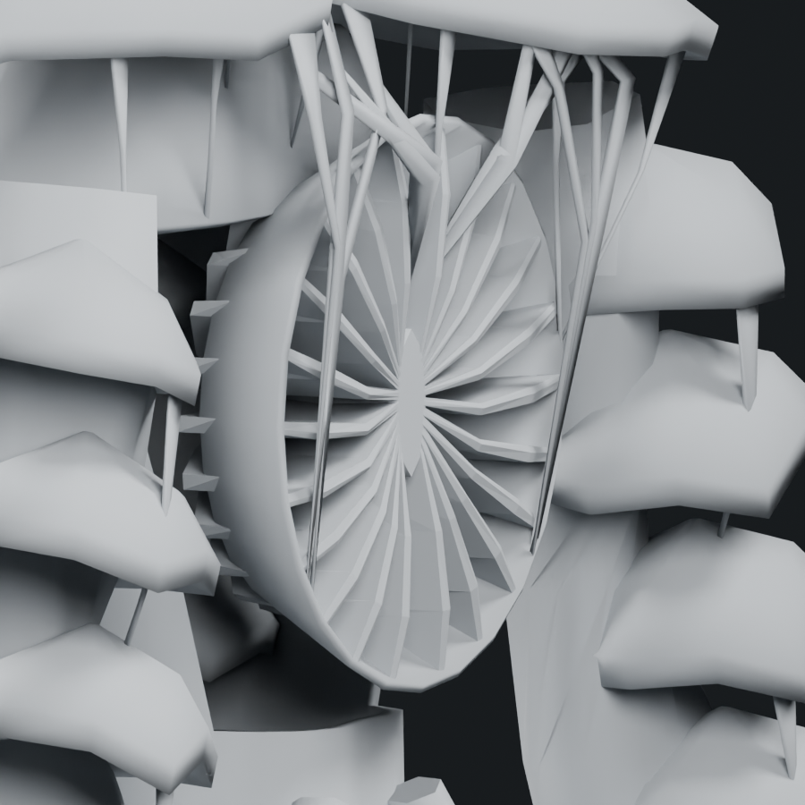
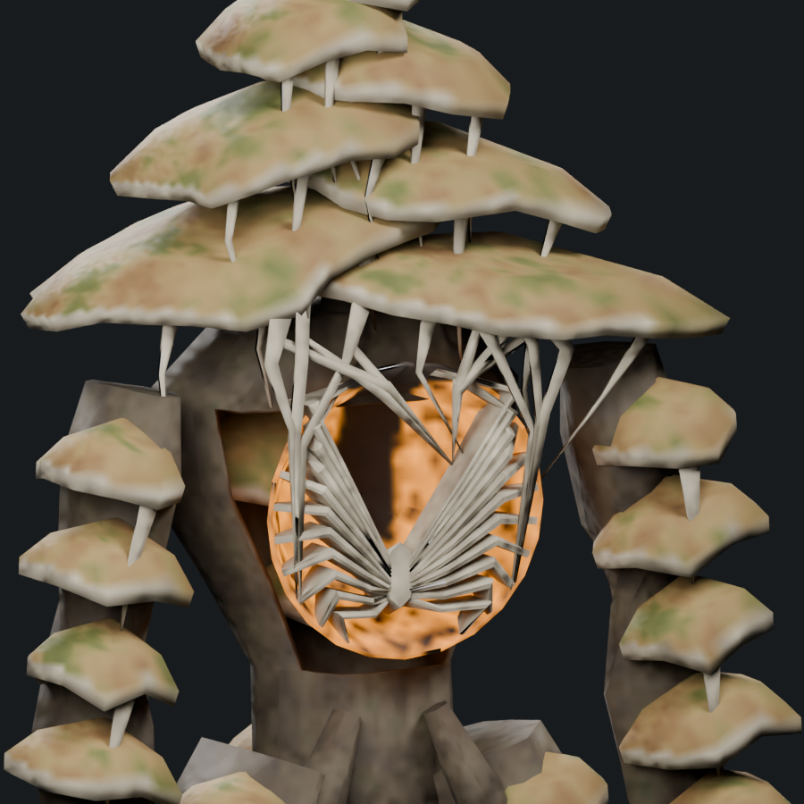
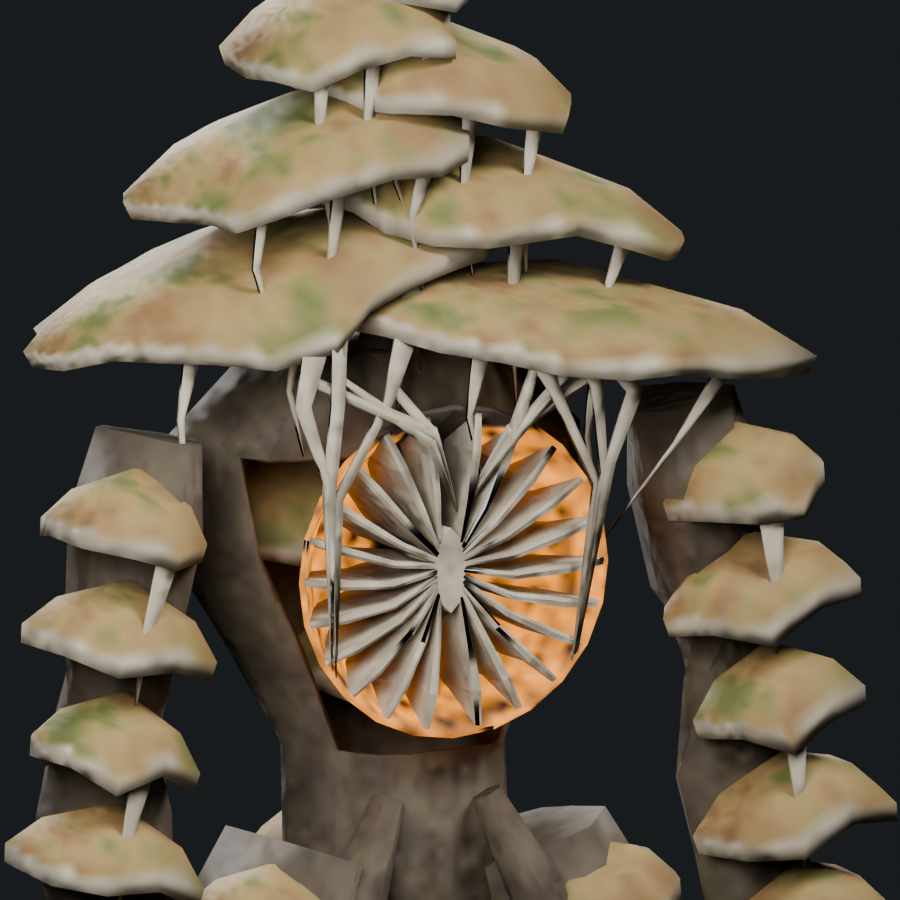

First Bloom: recessed radial shelves
The user's shape guide spreads the fins around the entire chest cavity. The join is now centered, upper fins open across the roof, and middle and lower fins radiate around it. Their broad faces extend backward into the cavity like mushroom gills, with amber tissue visible beneath them. This pass reshapes existing geometry without adding triangles.
22 curved pale lamellae · 9,252 triangles / 1.49× Troll · 9,309 soft cap
One mesh, one material, four 512px atlas maps. All 120 structural ends pass the saved rest contact check. Five inherited attack samples measure at most 0.52 mm outside separation, within the 1mm tolerance.
User shape guide and front view

User shape guide · full fan around a central join
Revision 8 · front view of the complete cavityConcept reference
 User-provided crop of the source concept · pale radial fins, recessed amber tissue
User-provided crop of the source concept · pale radial fins, recessed amber tissue
Current modeled interpretation · matched chest close-upPrevious shelves → radiating frills

Revision 6 · separate wall shelves · texturedRevision 7 · central join and radiating fins · textured
Revision 6 · separate wall shelves · clay
Revision 7 · central join and radiating fins · clayRecessed shelf depth

Revision 7 · oblique geometry
Revision 8 · deep faces reaching into the cavityWhole creature comparison

Revision 7
Revision 8Full concept · Editable Blender study · Skinned GLB · Inherited attack pose · Saved contact audit · Revision record
The model remains an uninstalled art study. Offline geometry and sampled contact checks do not establish visual acceptance, all-animation deformation quality or native runtime performance. Attachments intersect their supports and are not welded topology.